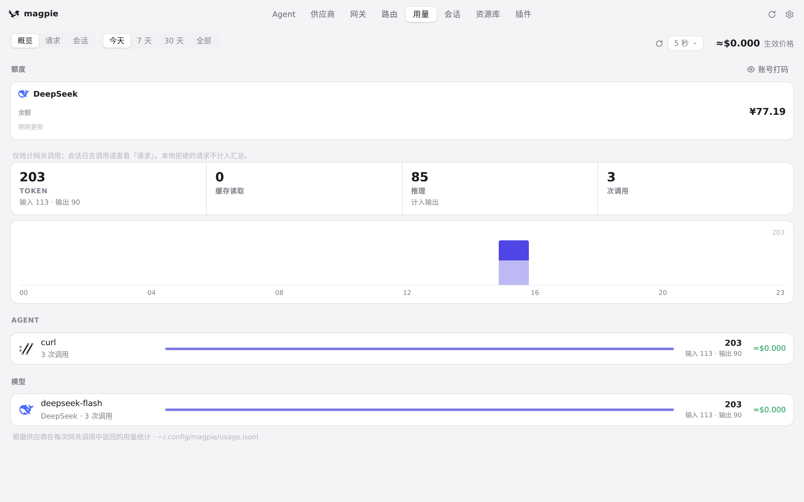
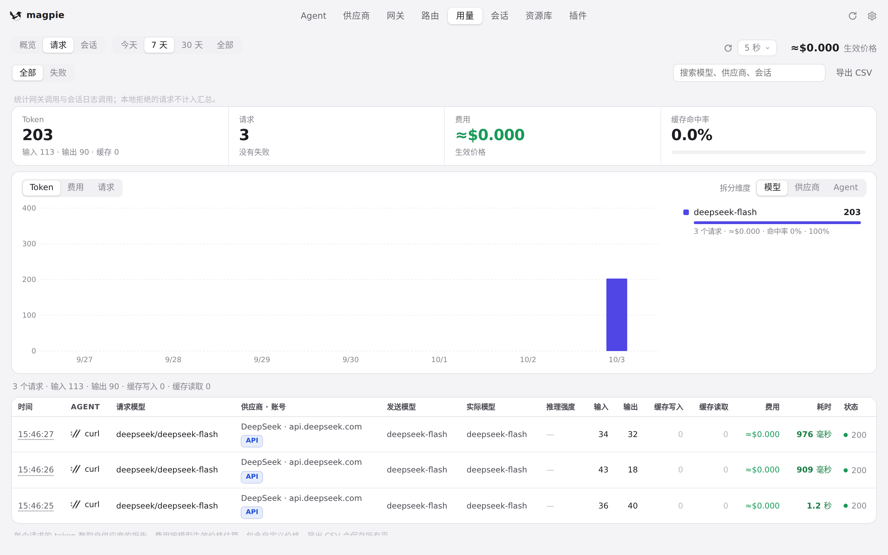
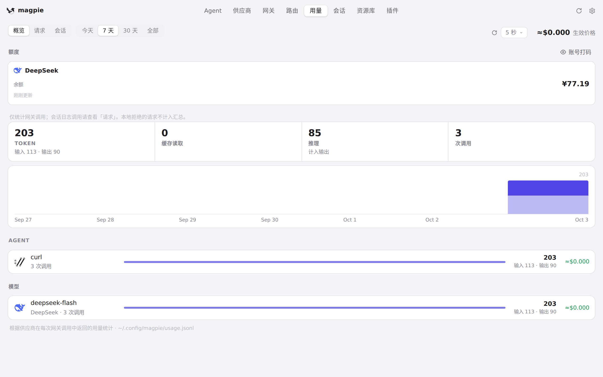

#664 界面预览
commit 73241c5 · 回到 PR · 这个 PR 在界面上看到的是「用量」页概览的数据读取方式：概览的每次读取（读者切周期/切标签触发的与定时/手动刷新触发的）现在共用同一个读取序号，只有最新一次的结果会被画出来，而且定时读取即使拿到与手上完全相同的数据，也会结束被顶掉的那次读取留下的骨架；供应商页那轮「列表还在路上」的轮询在读取或重载失败后也会重新排下一次，而不是就此停住。其余改动是 internal/plugin 的宿主读取与 CI/测试。
红线是鼠标走过的轨迹，红色圆环是一次点击；底部文字是这一步在做什么。空格暂停，← → 逐段查看。
 用量概览的周期与刷新 · 打开「用量」页，概览停在「今天」
用量概览的周期与刷新 · 打开「用量」页，概览停在「今天」
 用量概览的周期与刷新 · 「7 天」周期的概览
用量概览的周期与刷新 · 「7 天」周期的概览

用量概览的周期与刷新 · 切回「今天」后的概览
用量概览的周期与刷新 · 手动刷新之后的概览

切换标签时被留下的读取 · 「请求」标签

切换标签时被留下的读取 · 回到「概览」后的画面